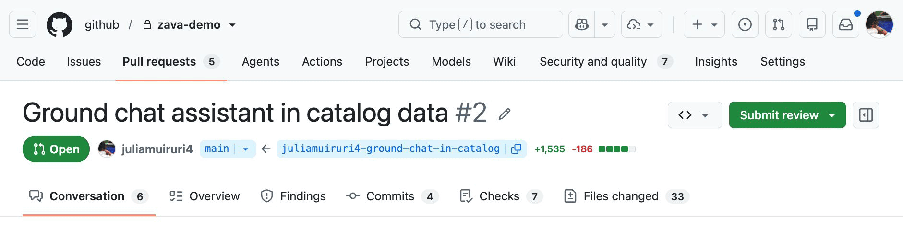
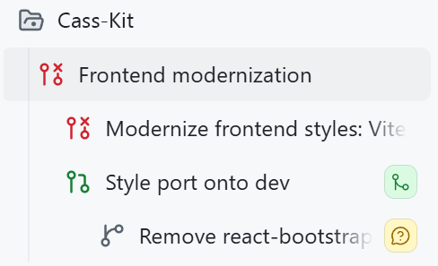
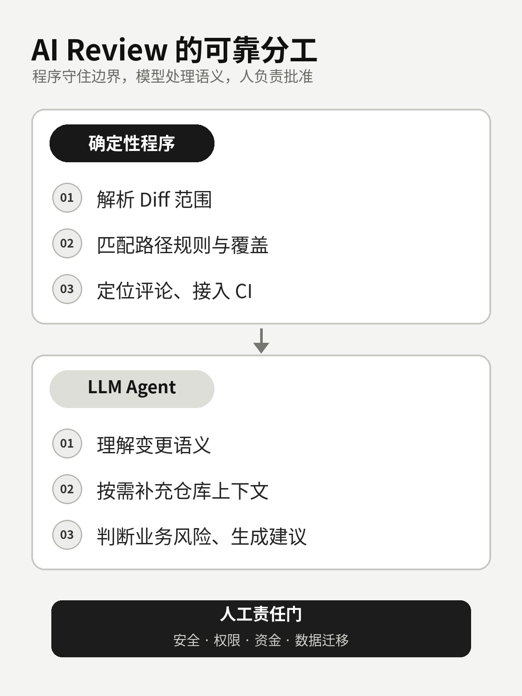
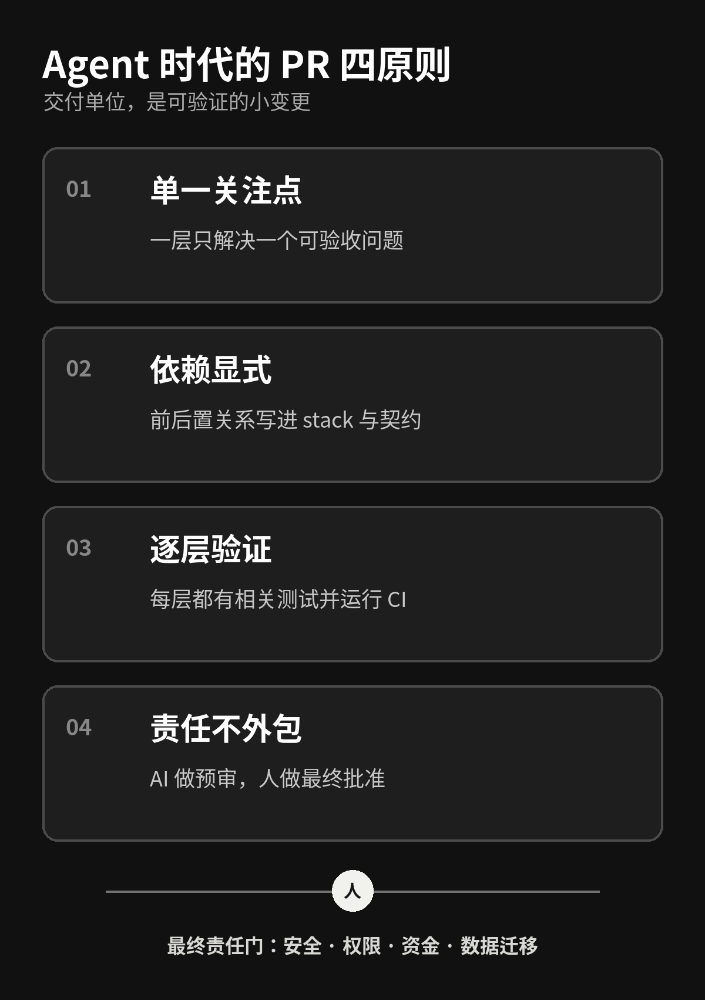

AI 一次能写 1000 行代码后，我反而更不敢合并了
AI Coding 最直观的变化，是代码真的写得越来越快了。
过去需要半天才能搭好的接口、页面和测试，现在交给 Coding Agent，短时间内就可能生成一整套实现。可当它以一个上千行 PR 出现在仓库里，团队真正的问题才刚刚开始：谁来确认它改对了？遗漏了什么？出了问题，能不能只回滚其中一部分？
GitHub 8 月 4 日发布的一篇工程文章里，就有一个很典型的案例。Agent 为购物助手生成商品搜索功能，一次形成大约 1,721 行变更，里面同时混着数据目录、搜索 API、聊天接入和前端引用卡片。
这 1,721 行只是教程案例，不是行业平均数据。但它准确暴露了一个正在出现的新瓶颈：
AI 缩短的是“从需求到代码”的时间，不是“从代码到可信变更”的时间。
代码生成的边际成本下降了，人的理解、验证和责任带宽却没有同步增长。AI Coding 越快，团队越需要重新设计代码如何进入评审、测试和合并流程。

图 1｜GitHub 官方教程中的示例 PR。来源：GitHub Blog。
新瓶颈不是产码，而是理解带宽
大 PR 一直不好审，AI 只是让它更容易发生。
Agent 可以同时修改几十个文件，把功能实现、重构、格式化和依赖调整一起交出来。对生成端来说很高效，对评审端来说却像突然收到一个没有目录的压缩包。
首先是理解成本。数据结构、接口、业务调用和 UI 状态混在一张 diff 里，reviewer 必须同时建立多个心智模型。代码本身可能不复杂，频繁切换上下文仍会拖慢评审，也更容易漏掉边界条件。
其次是返工成本。底层字段有问题，上层接口、调用和展示可能都要跟着改。修改完成后，reviewer 往往需要重新检查整块变更，很难确认影响到底停在哪里。
最后是合并成本。一个 PR 包含的关注点越多，回滚粒度越粗。CI 绿灯只能证明已经写进测试和规则的部分通过了，不能证明业务意图、权限边界和上线风险都正确。
所以“小 PR”的重点不是机械限制行数。Google 的代码评审实践把它定义得更准确：一个小变更应该是一项自包含的改变，带着相关测试，审查上下文足够，而且每次合入后系统仍然可工作。
如果把一个大功能硬切成十个无法独立验证的碎片，reviewer 只会得到十次不完整的上下文。真正要拆的是关注点、依赖和验收边界。
GitHub 的解法：把 PR 从一个包裹变成依赖图
GitHub 最近连续释放了两个信号。
7 月 30 日，GitHub Copilot app 分享了 stacked sessions 的实践：作者第一次想 one-shot 完成旧项目的前端现代化，结果失败。后来她把样式迁移和移除 react-bootstrap 拆成前后依赖的 session，每个 session 对应独立 PR。

图 2｜一次前端现代化任务被拆成前后依赖的 session。来源：GitHub Blog。
8 月 4 日，GitHub 又把那个约 1,721 行的商品搜索功能拆成了四层 stacked PR：
main
└─ PR1：商品数据与校验
└─ PR2：搜索 API
└─ PR3：聊天业务接入
└─ PR4：引用卡片与异常状态
Stacked PR 的关键不是 PR 数量变多，而是依赖关系变得可见。第一层面向 main，后续每层以前一层分支为基线。reviewer 在每个 PR 中只看这一层新增的 diff，同时又能知道它位于整条链的什么位置。
这样做的现实价值很直接：数据、API 和 UI 可以由不同 owner 分层评审；每层都运行 CI；底层没有通过时，上层不会被误认为已经具备合并条件；任何一层需要返工，影响范围也更清楚。
但 stacked PR 没有消灭复杂性。底层改动后，上层仍需要级联 rebase；冲突、分支同步和团队流程改造成本依然存在。GitHub 当前把这项能力标为 Public Preview，仍可能变化，而且分支必须位于同一仓库，GitHub Desktop 暂不支持。
所以不必把它神化成万能工作流，也不必等某个工具完全成熟才开始。即使只用普通 Git 分支，团队也可以先实践同样的原则：把大任务表达成一张有依赖顺序的变更图。
为什么再加一个 Review Agent 还不够
看到人的评审带宽不够，最自然的反应是：再部署一个 AI Review Agent 不就行了？
它当然有价值。但如果只是把 diff 扔给另一个模型，再用提示词要求“认真检查”，问题并没有真正解决。模型可能漏看文件、把错误规则用在错误目录、给出漂移的评论位置，也可能生成大量看起来专业、实际优先级很低的建议。
阿里开源的 OpenCodeReview 值得关注，不是因为它证明了 AI 可以接管 review，而是它展示了一种更合理的工程分工：确定性的事情交给程序，需要语义理解的事情再交给 LLM。
| 确定性程序负责 | LLM Agent 负责 |
|---|---|
| 解析 Git diff 和审查范围 | 理解当前变更的语义 |
| 过滤文件、匹配路径规则 | 按需读取文件和搜索仓库 |
| 记录覆盖、定位评论行号 | 判断业务逻辑和上下文风险 |
| 结构化输出、接入 CI | 生成问题说明与修复建议 |

图 3｜确定性程序守住覆盖与定位，LLM 处理上下文与语义，人负责最终批准。
它的公开实现会按文件或文件组运行相对隔离的评审子任务，需要跨文件信息时再通过工具读取。这样可以控制上下文和并发，也能保证目标进入流程。但默认策略并不天然正确，团队仍要检查 include、exclude 和路径规则，确认测试文件、生成文件和大文件是否被正确覆盖。
项目的开放 Issue 里也能看到重复评论、大文件策略、稳定 finding 标识等问题仍在演进。官方 benchmark 可以说明项目方的目标，不能直接作为优于人工的独立证据。
一篇 2026 年的代码评审 Agent 研究也提供了必要的警示。在论文选取的开源数据子集中，纯 Agent 评审 PR 的合并率为 45.20%，纯人工评审为 68.37%。但这只是特定数据集上的相关性结果，不能推导出“AI 评审导致 PR 无法合并”，也不能直接外推到企业私有仓库。
更稳妥的结论是：AI Review 适合做预审层和语义扫描层，不适合成为责任转移层。
Agent 时代，PR 至少要守住四条原则
如果团队已经在使用 Coding Agent，我建议先建立四条简单规则。
1. 单一关注点
一个 Agent 任务只解决一个可描述、可验收的问题。功能实现、顺手重构、依赖升级和大范围格式化不要混在同一层。发现 scope creep，就新开一层，而不是继续把当前 PR 做大。
2. 依赖显式
把前后置关系写进分支或 stack，也写进 PR 描述和接口契约。每个 PR 至少回答四个问题：为什么改，这一层改什么，明确不改什么，如何证明它完成了。
3. 逐层验证
每一层都带上相关测试，独立运行 lint、类型检查、单测或必要的 E2E。验证不能只在整条链的最后执行。底层失败时，上层即使自己绿灯，也不应该进入合并队列。
4. 责任不外包
确定性规则检查已知问题，LLM 扫描语义风险，人按风险等级批准。文档和低风险配置可以抽查；普通业务变更需要人工批准；涉及安全、权限、资金、数据迁移的改动，应由领域 owner 把关。

图 4｜把 Agent 产能收敛成可描述、可验证、可追责的小变更。
团队可以把它收敛成一句规则：
Agent 可以提交变更、运行检查和提出意见，但不能同时定义验收标准、证明自己通过，再批准自己上线。
这不是对 AI 不信任，而是软件工程里最基本的职责分离。模型越能自主行动，验收边界越要提前写清楚。
程序员的价值，正在迁移到边界设计和验收
AI Coding 时代，程序员当然还需要写代码。但更稀缺的能力会逐渐从“把实现敲出来”，转向“把变化组织成团队可以信任的交付单元”。
你要能把模糊需求拆成依赖图，为每一层定义输入、输出、测试和回滚方式；要知道哪些稳定约束应该进入 lint、静态分析和 CI，哪些业务判断可以让 LLM 提供线索，哪些风险必须由人承担。
团队的指标也应该跟着变化。与其统计 AI 生成了多少行代码，不如关注 review 等待时间、返工轮数、缺陷逃逸率和回滚恢复时间。前者衡量的是产出速度，后者才更接近真实交付能力。
未来程序员不只是代码生产者，还会越来越像变更边界的设计者和验收负责人。
AI 可以把一千行代码写得很快。真正决定团队能不能更快交付的，是我们能否把这一千行代码变成一组可理解、可验证、可回滚的小变更。
参考资料
GitHub Blog：Turn one giant AI-generated pull request to a reviewable stack
GitHub Blog：Stacked sessions and pull requests in the GitHub Copilot app
GitHub Docs：About stacked pull requests
Alibaba：OpenCodeReview
Alibaba OpenCodeReview：Architecture
Google Engineering Practices：Small CLs
Chowdhury 等：From Industry Claims to Empirical Reality: An Empirical Study of Code Review Agents in Pull Requests